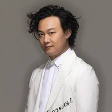
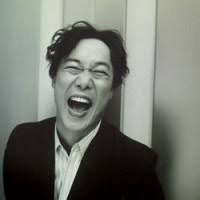
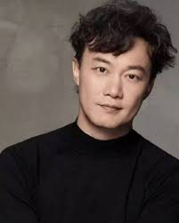

- 个人简介
- 重要事件
- 成就和荣誉
- 主要作品
- 生活照
- 生平
陈奕迅
陈奕迅（英语：Eason Chan Yick-shun，1974年7月27日－），香港流行音乐男歌手及演员。他被《时代杂志》形容为带领广东音乐潮流及影响香港乐坛风格的人物, 其2005年推出的大碟《U87》被《时代杂志》推选为五大亚洲最值得购买的唱片之一[13]，1995年因获得第14届TVB全球华人新秀歌唱大赛冠军而正式入行，至今已发行超过40张专辑。2010年，入选全球华人音乐殿堂—中国华语金曲奖“30年经典评选”，成为90年代出道歌手唯一代表。他曾三度获得台湾金曲奖最佳国语男歌手奖，与殷正洋并列为“金曲歌王”纪录保持人
重要事件
- 2018年凭国语专辑《C'mon In~》拿下29届金曲奖“最佳国语男歌手奖”及“年度专辑奖”
- 2019年凭《L.O.V.E.》入围金曲奖第30届年度专辑奖，也是唯一的粤语专辑。他过往曾多次举办世界巡回演唱会
- 2012年4月于O2体育馆举办《DUO 陈奕迅2012演唱会》伦敦站，成为首位站上O2 Arena的华人歌手，门票在开卖20分钟内售罄，成为O2 Arena售票速度最快纪录的第二名，仅落后于米高·积逊。
成就和荣誉
- 2000年-02年、2005年及2007年五度获得过传媒大奖
- 9度夺得“至尊唱片大奖”及先后凭〈K歌之王〉（2000年）、〈夕阳无限好〉（2005年）、〈七百年后〉（2009年）、〈重口味〉（2012年）、〈任我行〉（2013年）、〈无条件〉（2015年）及〈四季〉（2016年）7度夺得“至尊歌曲大奖”
- 1998年，他凭《我的快乐时代》及歌曲〈天下无双〉首次在颁奖礼上丰收。
- 2014年1月1日，陈奕迅在香港举办的叱咤乐坛流行榜颁奖典礼连续第10年拿下最佳男歌手奖座
- 2015年6月凭专辑《Rice & Shine》拿下第二座“金曲歌王”宝座(“最佳国语男歌手奖”)
- 2018年6月三度获颁“金曲歌王”(“最佳国语男歌手奖”)，同时凭《C'mon In~》首次获得全晚压轴大奖“金曲奖年度专辑奖”
主要作品
| 年份 |
专辑名 |
| 1998 |
大激想 |
| 1999 |
天佑爱人及幸福 |
| 2000 |
打得火热 |
| 2002 |
The Easy Ride |
| 2003 |
I Had a Great Time |
| 2005 |
U87 |
| 2006 |
最佳损友 |
| 2012 |
六月飞霜 |
生活照



生平
陈奕迅曾就读圣若瑟小学[14]，中学时因为父亲陈裘大为高级公务员，自中学开始与哥哥陈泽迅获政府津贴到英国唐德塞中学读书，大学时期在金士顿大学修读建筑学[15]及四年正统音乐课程。于其间考得英国皇家音乐学院八级声乐证书（八级为业余最高）[16]。
1995年暑假期间回香港参加TVB及华星唱片合办的第14届新秀歌唱大赛，演唱张学友的歌曲《望月》，在多个环节均获得高评分，成为该届冠军，随即跟华星唱片公司签下歌星合约。